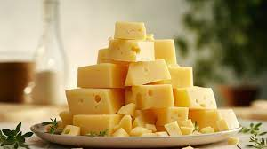

15 необычных фактов о еде
Знали ли вы, что наклейки на еде можно есть? Что сыр воруют чаще других продуктов? Еда на самом деле богатейший материал для исследования. Интересные факты о ней можно рассказывать почти бесконечно.

Сказать точно, где и когда появился сыр невозможно. Но зато точно известно, что этот замечательный продукт дошел до нас с первобытных времен. Скорее всего, его открыли путем наблюдения за молоком, которое сворачивалось в тепле. Археологи предполагают, что люди умели делать сыр уже в неолите (примерно 5000 лет до нашей эры). Значит, история сыра насчитывает более 7000 лет.
Знали ли вы, что наклейки на еде можно есть? Что сыр воруют чаще других продуктов? Еда на самом деле богатейший материал для исследования. Интересные факты о ней можно рассказывать почти бесконечно.